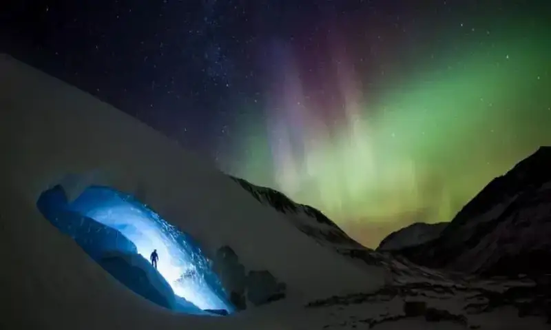
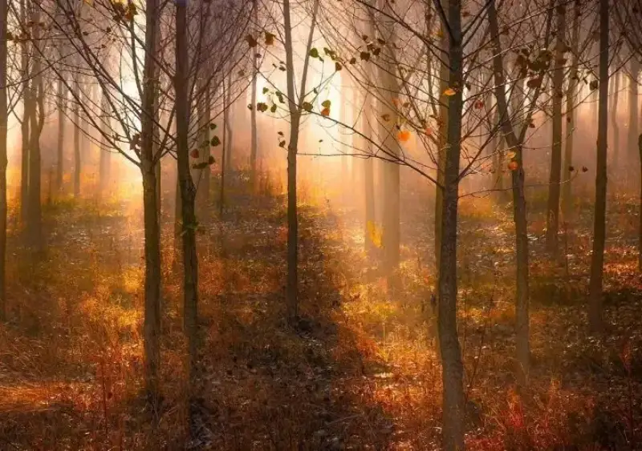
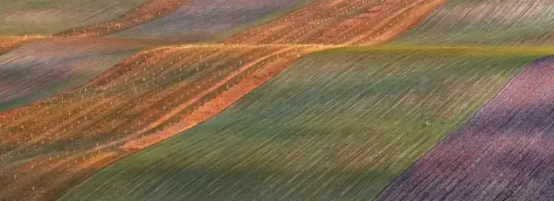
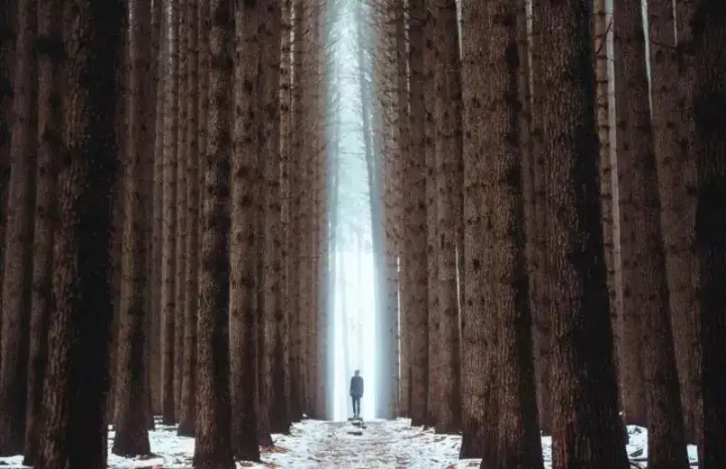
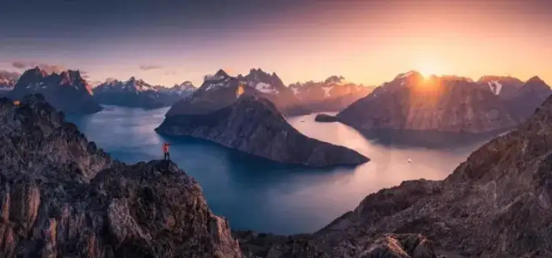
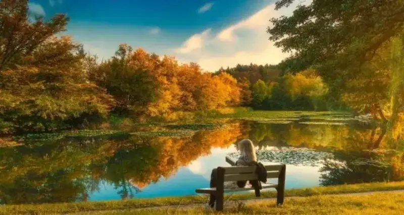
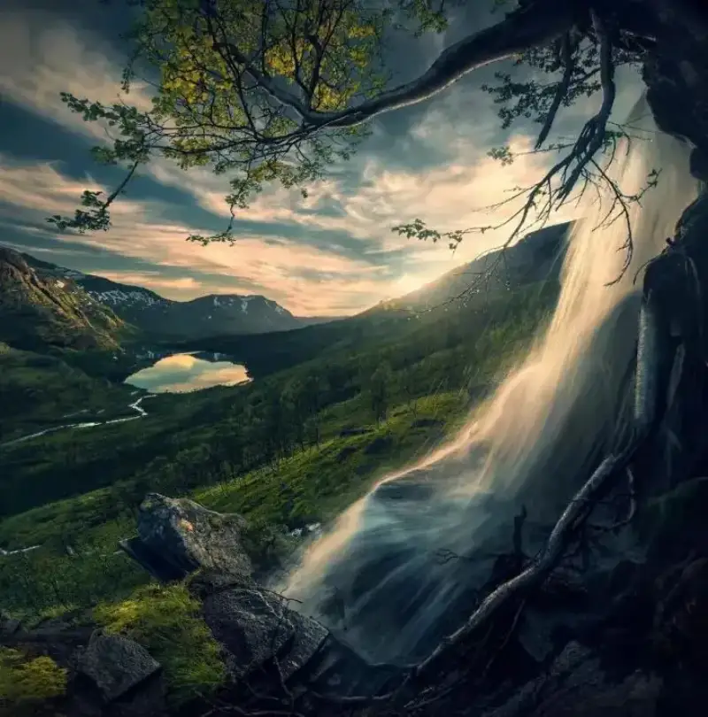

Landscape photography is the most common kind. Whether in daily life or on a trip, you can take good landscape photos.
In everyday shooting, people only look for beautiful scenery and ignore the layers of the frame. How do you get layers in a frame? Try the 7 methods below.
Method 1: Use contrast of light and dark
The first method relies on the natural light and shadow of the scene. For example, the light-dark contrast on the roof in the photo comes from direct sunlight.

Or use a graduated light-dark relationship from near to far. In the photo below, the graduated light and dark between the beach figures and the mountain gives the photo clear layers.

Method 2: Use color contrast
When you shoot landscape photos, the colors change with the weather and color temperature. The scenery looks different at different times of day.

You can adjust the exposure settings to fit the theme. This makes the tone and color of the photo more pleasing and adds layers.

Color contrast means putting scenes of opposite colors together. When you use color contrast, bring in scenes with clearly different colors. This makes the contrast stronger.

Method 3: Use contrast of sharp and blurred
In fact, the common technique of "wide aperture to blur the background" uses the contrast of sharp and blurred. This not only brings out the subject but also gives the photo a sense of depth.

In landscape photography, graduated blur from near to far creates a linear, gradual contrast. This forms rich layers.

Method 4: Linesperspective
Use the lines of the scene itself to formperspectiveThis also gives the frame a three-dimensional feel and brings out the layers.

Whether the lines run vertically or horizontally, regular lines form a special kind of layer.

Method 5: Use depth
Our eyes see near objects as large and far objects as small. When a photo shows both near and far objects, it matches what our eyes expect, and the photo looks three-dimensional and deep.

In the photo, a road guides the viewer's eye from near to far. Using this deep composition adds layers to the whole photo.

Method 6: The point of interest
A good photo must have a point of interest that draws the viewer's eye and carries a message. In landscape photography, the golden ratio or rule-of-thirds grid is a common choice.

In the photo, place the foreground figure on the golden-ratio point or a grid intersection. This gives the frame more variation and adds layers.

Method 7: Add a foreground
Add a foreground to the frame to increase its layers. This method is simple and the effect is clear.
When you shoot, choose suitable scenes on site as a foreground. Then the main subject becomes the middle ground, and the layers of the frame grow stronger.

For example, when you shoot a distant peak, if you take only the peak, the layers will not be enough. Then you can find some beautiful flowers or even a waterfall as a foreground. This adds beauty and enriches the layers.